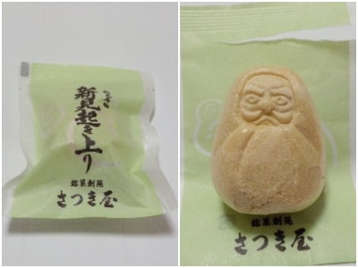

岡山県新見市金谷1165-2
更新日 : 2026/03/07

水分多めで寒天の入った白あんと、柚子がほんの少し入った最中です。
新見名物起き上りということですが、ネットで検索しましたが何のことかわかりませんでした。たまたま私の集中力がなくて見つけれなかったんでしょう。
最中は地方ごとに特産物の形になってたりして面白いです。新見市はだるまなんですね。お土産でもらいましたが、特徴があるものをもらうのはうれしいです。
【おいしいものを食べよう。】【たくさん寝よう。】
【ソロ活をしよう!】【季節感のあることをしよう。】【動画視聴はほどほどに。】【当サイトの全てのコンテンツは無断転載禁止です。】